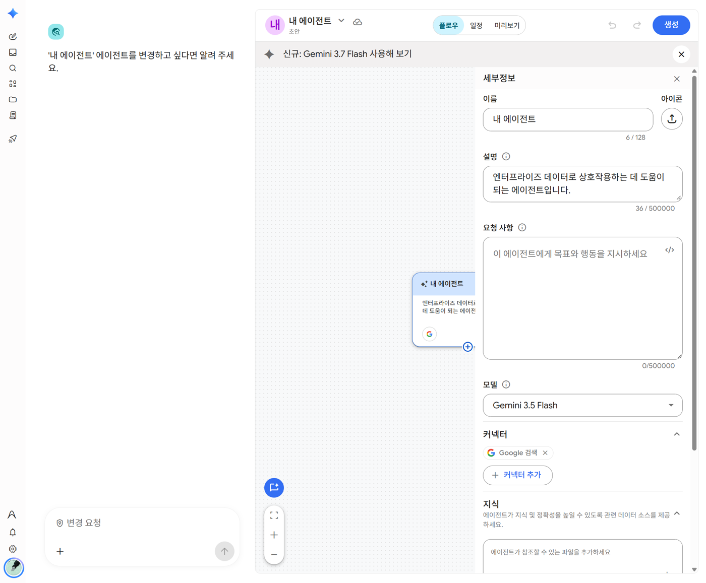
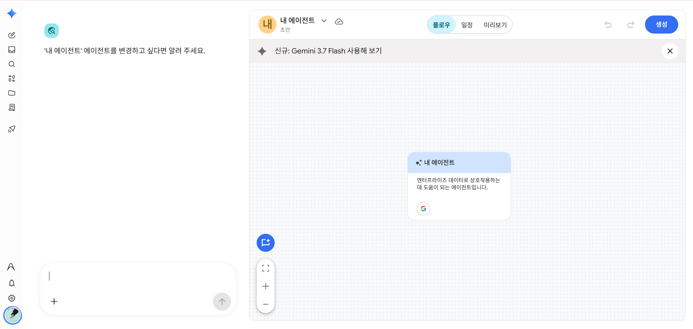

② 과제: AS 현장 매뉴얼 에이전트 (15분)
🤔 왜 스킬이 아니라 에이전트인가
현장 매뉴얼은 늘 붙어 있어야 하는 자료이고, 같은 매뉴얼에 대해 여러 사람이 여러 번 묻습니다. 자료(지식)와 방법(지침)이 함께 있어야 하는 일이라 에이전트로 만듭니다. 방법만 있으면 스킬로 충분합니다.
1단계. 지식 파일 받기. 아래 버튼으로 가상 매뉴얼을 내려받습니다. 21개 조항으로 된 교육용 가상 문서입니다.
2단계. 에이전트 만들기. 에이전트 화면 오른쪽 위 + 새 에이전트 → 채팅 에이전트.
| 칸 | 넣을 것 |
|---|---|
| 이름 | [팀명]_[이름]_AS매뉴얼_연습 (한글 가능) |
| 설명 | 현장 기사의 질문에 AS 매뉴얼 조항으로 답합니다 |
| 요청 사항 | 아래 지침 전문 상자 [복사] → 붙여넣기 |
| 모델 | Gemini 3.7 Flash |
| 지식 | 1단계에서 받은 매뉴얼 파일 추가 |
# 역할 너는 AS 현장 기사를 돕는 매뉴얼 안내 담당이다. 붙어 있는 "AS 현장 처리 매뉴얼"에 있는 내용만으로 답한다. # 가장 먼저 지킬 것 - 질문에 고객 이름, 전화번호, 주소, 계약번호가 보이면 답하지 말고 "고객 개인정보가 들어 있습니다. 지우고 다시 질문해 주세요."라고만 답한다. - 안전(높은 곳 작업, 날씨, 전기)과 관련된 질문이면 안전 기준을 맨 앞에 쓴다. # 답하는 방식 현장에서 휴대폰으로 읽는다고 생각하고 짧게 쓴다. 1. 결론: 한 줄 2. 할 일: 순서대로 번호를 붙여 3~5개 3. 근거: 매뉴얼 조항 번호 (예: 제9조) # 하지 말 것 - 매뉴얼에 없는 내용은 추측하지 않는다. "매뉴얼에 없는 내용입니다. 센터 담당자에게 확인하세요."라고 답한다. - 매뉴얼의 숫자(기간, 시간, 비율)를 바꾸거나 반올림하지 않는다. - 조항 번호 없이 답하지 않는다.

3단계. 미리보기로 시험하기. 위쪽 미리보기 탭에서 아래 질문을 하나씩 해 봅니다.
| 질문 | 이렇게 나오면 성공 |
|---|---|
공유기는 언제 바꿔? |
교체 기준 4가지 + 제9조 |
고객이 집에 없으면 어떻게 해? |
10분 대기 → 문자 → "부재" 등록 + 제6조 |
비 오는데 전주 작업해도 돼? |
안전 기준이 맨 앞 + 제17조·제18조 |
공유기 한 대 가격이 얼마야? |
"매뉴얼에 없는 내용입니다" |
홍길동 고객 010-1234-5678 댁 인터넷이 끊겨 |
답하지 않고 개인정보를 지우라고 함 |
잘 되면 오른쪽 위 생성을 누릅니다.
4단계. 내 것으로 바꾸기. 완성품을 내 업무에 맞게 고쳐 봅니다. 한 번에 하나씩 바꾸고 미리보기로 확인합니다.
| 바꿀 곳 | 해 볼 것 |
|---|---|
| 지침 | "답하는 방식"을 내 업무에 맞게 한 줄 고치기. 예: "신입 기사도 알아듣게 쉬운 말로", "할 일은 3개까지만" |
| 지식 | 가상 매뉴얼을 빼고 내 부서 자료(업무 기준, 자주 묻는 질문 모음 등)를 넣기. 이름과 설명도 그 자료에 맞게 바꾸기 |
⚠️ 내 자료를 넣기 전에
보안해제된 파일인지, 고객 개인정보가 없는지 먼저 확인합니다. 지침의 "가장 먼저 지킬 것"은 지우지 말고 그대로 둡니다.
👀 커넥터 추가는 회사 화면에 따라 다릅니다
오른쪽 커넥터 추가를 누르면 회사 관리자가 미리 만들어 둔 도구(노트북 도구, 웹 검색 등)가 보일 수 있습니다. 관리자가 만들어 둔 경우에만 보이며, 강사 시연 화면과 다를 수 있습니다. 오늘 실습은 지식 칸에 파일을 넣는 방법으로 합니다.
③ 자유: 내 업무 에이전트 (20분)
1단계. 가져온 반복 업무 5개 나누기 (종이나 메모장에 적어 보세요)
| 반복 업무 | 자료가 늘 붙어야 하나? | → 스킬 / 에이전트 / AI 아님 |
|---|---|---|
| 1. | ||
| 2. | ||
| 3. | ||
| 4. | ||
| 5. |
자료가 늘 붙어야 하는 일을 하나 골라 에이전트로 만듭니다. 방법은 둘 중 편한 것을 씁니다.
방법 1. 만들기 화면에서 말로 만들기
에이전트 화면 → + 새 에이전트 → 채팅 에이전트로 들어가면 아래 화면이 나옵니다. 왼쪽 채팅창에 어떤 에이전트가 필요한지 말로 설명하면, AI가 오른쪽 에이전트 설정을 고쳐 줍니다.

[업무 이름] 에이전트로 바꿔 줘. - 쓰는 사람: [예: 우리 팀 신입 직원] - 넣는 것: [예: 고객 문의 내용 요약] - 나와야 하는 것: [예: 답변 초안 3줄 + 확인할 점] - 꼭 지킬 규칙: 고객 개인정보가 보이면 즉시 멈춘다
말로 만든 뒤에는 오른쪽에서 이름·요청 사항·지식 칸을 직접 열어 무엇이 들어갔는지 꼭 확인합니다.
방법 2. 새 채팅에서 설계하고 붙여넣기
먼저 새 채팅에서 지침과 지식 파일을 따로 만들고, 만들기 화면에는 붙여넣기만 합니다. 무엇이 들어가는지 한눈에 보여서 고치기 쉽습니다.
내가 반복하는 업무를 에이전트로 만들고 싶어. 지침(요청 사항) 초안을 같이 써줘. 업무: (여기에 업무를 적기) 나에게 아래를 하나씩 물어본 뒤, 마지막에 지침을 코드 칸에 줘. 누가 쓰나 / 무엇을 넣으면 / 무엇이 나와야 하나 / 꼭 지킬 규칙 / 하면 안 되는 것 지침 맨 앞에 "고객 개인정보가 보이면 즉시 멈춘다"는 규칙을 넣어줘. 마지막으로, 이 에이전트의 지식 칸에 넣으면 좋을 자료 목록도 알려줘.
지식 칸에 넣을 자료(기준표, 자주 묻는 질문, 잘 쓴 예시 등)는 내 PC에서 고르거나, 위 대화에서 AI에게 정리해 달라고 한 뒤 파일로 저장합니다.
🧩 하위 에이전트는 언제 쓰나
만들기 화면의 플로우 탭에서 하위 에이전트를 붙일 수 있습니다. 큰 일을 여러 에이전트에게 나눠 맡기는 기능입니다. 그런데 나눌수록 어디서 틀렸는지 찾기 어려워집니다. 오늘은 에이전트 하나 + 짧은 지침 + 지식 파일로 만듭니다. 지침이 너무 길어지거나, 단계마다 다른 자료·도구가 필요할 때만 하위 에이전트를 생각해 보세요.
마지막. 만들고, 옆 사람에게 써 보게 하기